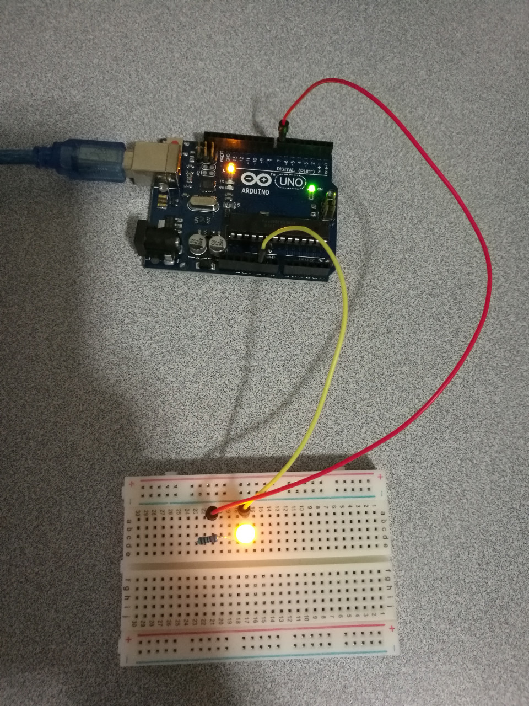

FIRST Arduino Project - LED Blinking
Our first LED example is LED Blinking.
Hardware Wiring

Sketch
/*
Blink
Turns on an LED on for one second, then off for one second, repeatedly.
This example code is in the public domain.
*/
// Pin 9 has an LED connected on most Arduino boards.
// give it a name:
int led = 9;
// the setup routine runs once when you press reset:
void setup() {
// initialize the digital pin as an output.
pinMode(led, OUTPUT);
}
// the loop routine runs over and over again forever:
void loop() {
digitalWrite(led, HIGH); // turn the LED on (HIGH is the voltage level)
delay(1000); // wait for a second
digitalWrite(led, LOW); // turn the LED off by making the voltage LOW
delay(1000); // wait for a second
}
Verify & Compile
In Arduino IDe, to compile the above codes, click Sketch->Verify/Compile; to upload the code onto Arduino board afterwards, click Sketch->Upload.